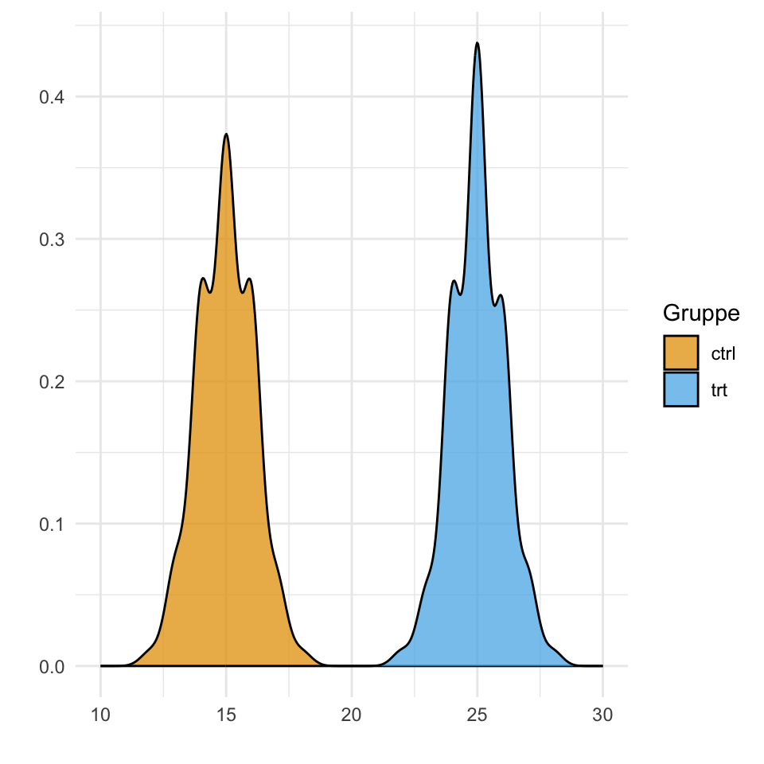
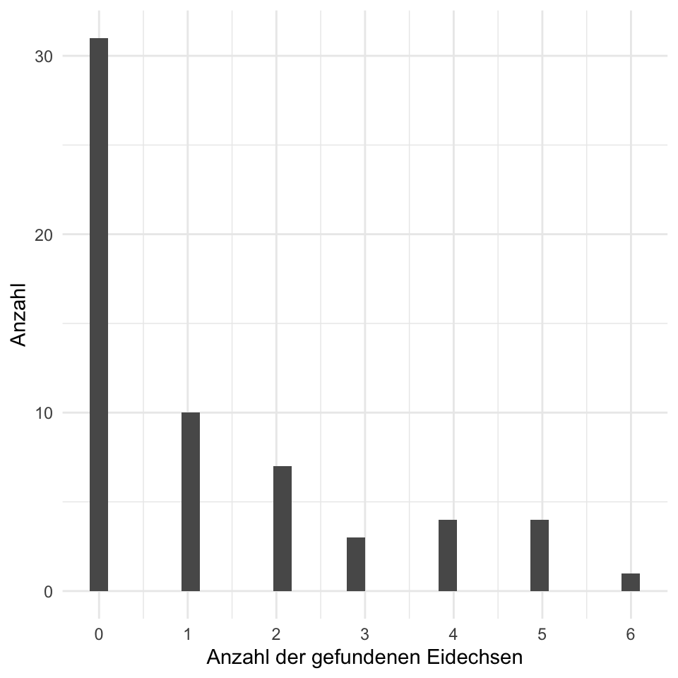
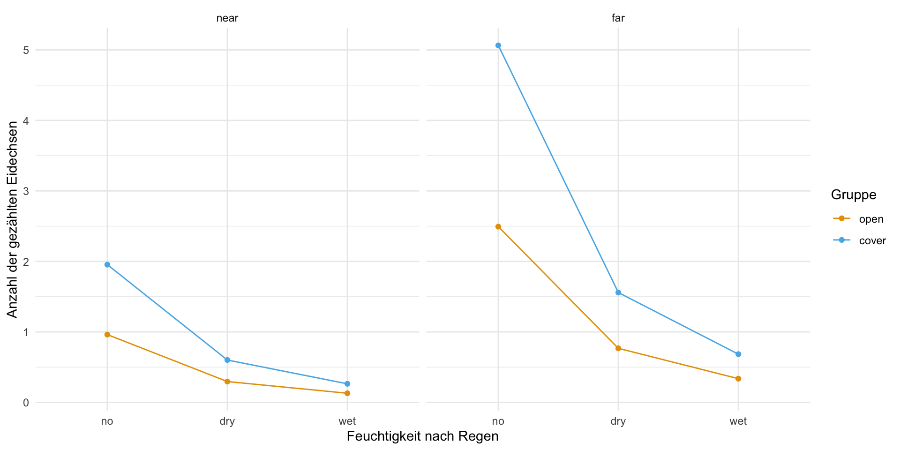

pacman::p_load(tidyverse, magrittr, conflicted, broom,
parameters, performance, MASS, pscl, see,
modelsummary, scales)
conflict_prefer("select", "dplyr")
conflict_prefer("filter", "dplyr")
conflict_prefer("mutate", "dplyr")
cbbPalette <- c("#000000", "#E69F00", "#56B4E9", "#009E73",
"#F0E442", "#0072B2", "#D55E00", "#CC79A7")42 Poisson Regression
Version vom August 11, 2023 um 17:40:26
Einführung in die Poisson Regression per Video
Du findest auf YouTube Poisson Regression als Video Reihe. Ich werde zwar alles nochmal hier als Text aufschreiben, aber manchmal ist das Sehen und Hören dann einfacher.
In diesem Kapitel wollen wir eine Poisson Regression rechnen. Wir müssen uns hier wieder überlegen, was ist eigentlich unser Outcome \(y\) und was sind unsere Einflussvariablen \(x\). Die Poisson Regression ist je nach Hintergurnd des Anwenders eher selten. In der Ökologie, wo gerne mal gezaählt wird, wie oft etwas vorkommt, ist die Poisson Regression häufig vertreten. Sonst fristet die Poisson Regresson eher ein unbekanntes Dasein.
Ein häufig unterschätzter Vorteil der Poisson Regression ist, dass wir auch auch \(0/1\) Daten eine Poisson Regression rechnen können. Moment, wirst du jetzt vielleicht denken, das machen wir doch mit der logistsichen Regression. Ja, das stimmt, aber wir können auf Zahlen viel rechnen. Wenn wir auf ein \(0/1\) Outcome eine Poisson Regression rechnen, dann kriegen wir nicht Odds Ratios \(OR\) als Effektschätzer sondern Risk Ratios \(RR\). Wir erhalten also keine Chancen sondern Wahrscheinlichkeiten. Unter der Annahme, dass das Modell auch konvergiert und wir sinnvolle Zahlen erhalten.
Ein weiteres Problem sind die zu vielen Nullen in dem Outcome \(y\). Daherher wir zählen über die Maßen viel Nichts. Wir nennen diesen Fall zero inflation und beschreiben damit die zu vielen Nullen in den Daten. Hier muss dann noch speziell modelliert werden. Eine Poisson Regression hat schon so seine speziellen Tücken.
42.1 Annahmen an die Daten
Unser gemessenes Outcome \(y\) folgt einer Poissonverteilung.
Im folgenden Kapitel zu der multiplen Poisson linearen Regression gehen wir davon aus, dass die Daten in der vorliegenden Form ideal sind. Das heißt wir haben weder fehlende Werte vorliegen, noch haben wir mögliche Ausreißer in den Daten. Auch wollen wir keine Variablen selektieren. Wir nehmen alles was wir haben mit ins Modell. Sollte eine oder mehre Bedingungen nicht zutreffen, dann schaue dir einfach die folgenden Kapitel an.
- Wenn du fehlende Werte in deinen Daten vorliegen hast, dann schaue bitte nochmal in das Kapitel 39 zu Imputation von fehlenden Werten.
- Wenn du denkst, dass du Ausreißer oder auffälige Werte in deinen Daten hast, dann schaue doch bitte nochmal in das Kapitel 38 zu Ausreißer in den Daten.
- Wenn du denkst, dass du zu viele Variablen in deinem Modell hast, dann hilft dir das Kapitel 37 bei der Variablenselektion.
Daher sieht unser Modell wie folgt aus. Wir haben ein \(y\) und \(p\)-mal \(x\). Wobei \(p\) für die Anzahl an Variablen auf der rechten Seite des Modells steht. Im Weiteren folgt unser \(y\) einer Poissonverteilung. Das ist hier sehr wichtig, denn wir wollen ja eine multiple Poisson lineare Regression rechnen.
\[ y \sim x_1 + x_2 + ... + x_p \]
Wir können in dem Modell auch Faktoren \(f\) haben, aber es geht hier nicht um einen Gruppenvergleich. Das ist ganz wichtig. Wenn du einen Gruppenvergleich rechnen willst, dann musst du in Kapitel 32 nochmal nachlesen.
42.2 Genutzte R Pakete für das Kapitel
Wir wollen folgende R Pakete in diesem Kapitel nutzen.
Am Ende des Kapitels findest du nochmal den gesamten R Code in einem Rutsch zum selber durchführen oder aber kopieren.
42.3 Daten
Im folgenden schauen wir uns ein Datenbeispiel mit Hechten an. Es handelt sich um langnasige Hechte in nordamerikanischen Flüssen. Wir haben uns insgesamt \(n = 68\) Flüsse einmal angesehen und dort die Anzahl an Hechten gezählt. Im Weiteren haben wir dann noch andere Flussparameter erhoben und fragen uns nun, welche dieser Parameter einen Einfluss auf die Anzahl an Hechten in den Flussarmen haben. In Kapitel 9.2 findest du nochmal mehr Informationen zu den Daten. Wir entfernen hier die Informationen zu den Flüssen, die brauchen wir in dieser Analyse nicht.
Die Daten zu den langnasigen Hechten stammt von Salvatore S. Mangiafico - An R Companion for the Handbook of Biological Statistics.
longnose_tbl <- read_csv2("data/longnose.csv") %>%
select(-stream)| longnose | area | do2 | maxdepth | no3 | so4 | temp |
|---|---|---|---|---|---|---|
| 13 | 2528 | 9.6 | 80 | 2.28 | 16.75 | 15.3 |
| 12 | 3333 | 8.5 | 83 | 5.34 | 7.74 | 19.4 |
| 54 | 19611 | 8.3 | 96 | 0.99 | 10.92 | 19.5 |
| 19 | 3570 | 9.2 | 56 | 5.44 | 16.53 | 17 |
| … | … | … | … | … | … | … |
| 26 | 1450 | 7.9 | 60 | 2.96 | 8.84 | 18.6 |
| 20 | 4106 | 10 | 96 | 2.62 | 5.45 | 15.4 |
| 38 | 10274 | 9.3 | 90 | 5.45 | 24.76 | 15 |
| 19 | 510 | 6.7 | 82 | 5.25 | 14.19 | 26.5 |
Im Folgenden werden wir die Daten nur für das Fitten eines Modells verwenden. In den anderen oben genannten Kapiteln nutzen wir die Daten dann anders. In Abbildung 42.1 sehen wir nochmal die Verteilung der Anzahl der Hechte in den Flüssen.
ggplot(longnose_tbl, aes(longnose)) +
theme_bw() +
geom_histogram()
42.4 Fit des Modells
In diesem Abschnitt wollen wir verschiedene Modelle für Zähldaten schätzen. Die Poissonverteilung hat keinen eignen Parameter für die Streung wie die Normalverteilung. Die Poissonverteilung ist mit \(\mathcal{Pois}(\lambda)\) definiert und hat somit die Eigenschaft das die Varianz eins zu eins mit dem Mittelwert \(\lambda\) der Poissonverteilung ansteigt. Es kann aber sein, dass wir in den Daten nicht diesen ein zu eins Zusammenhang von Mittelwert und Varianz vrliegen haben. Häufig ist die Varianz viel größer und steigt schneller an. Wenn die Varianz in Wirklichkeit sehr viel größer ist, dann würden wir die Varianz in unseren Modell unterschätzen.
- Ein klassisches Poissonmodell
glm(..., familiy = poisson)mit der Annahme keiner Overdisperison. - Ein Quasi-Poissonmodell
glm(..., family = quasipoisson)mit der Möglichkeit der Berücksichtigung einer Overdispersion. - Ein negative Binomialmodell
glm.nb(...)ebenfalls mit der Berücksichtigung einer Overdispersion.
Beginnen wollen wir aber mit einer klassischen Poissonregression ohne die Annahme von einer Overdispersion in den Daten. Wir nutzen dafür die Funktion glm() und spezifizieren die Verteilungsfamilie als poisson. Wir nehmen wieder alle Variablen in das Modell auf der rechten Seite des ~. Auf der linken Seite des ~ kommt dann unser Outcome longnose was die Anzahl an Hechten erhält.
Hier gibt es nur die Kurzfassung der link-Funktion. Dormann (2013) liefert hierzu in Kapitel 7.1.3 nochmal ein Einführung in das Thema.
Wir müssen für die Possionregression noch beachten, dass die Zähldaten von \(0\) bis \(+\infty\) laufen. Damit wir normalverteilte Residuen erhalten und einen lineren Zusammenhang, werden wir das Modell auf dem \(\log\)-scale fitten. Das heißt, wir werden den Zusammenhang von \(y\) und \(x\) logarithmieren. Wichtig ist hierbei der Zusammenhang. Wir transformieren nicht einfach \(y\) und lassen den Rest unberührt. Das führt dazu, dass wir am Ende die Koeffizienten der Poissonregression exponieren müssen. Das können die gängigen Funktionen, wir müssen das Exponieren aber aktiv durchführen. Deshalb hier schon mal erwähnt.
poisson_fit <- glm(longnose ~ area + do2 + maxdepth + no3 + so4 + temp,
longnose_tbl, family = poisson)Wir schauen uns die Ausgabe des Modells einmal mit der summary() Funktion an, da wir hier einmal händisch schauen wollen, ob eine Overdispersion vorliegt. Sonst könnten wir auch die Funktion model_parameters() nehmen. Die nutzen wir später für die Interpretation des Modells, hier wollen wir erstmal sehen, ob alles geklappt hat.
poisson_fit %>% summary
Call:
glm(formula = longnose ~ area + do2 + maxdepth + no3 + so4 +
temp, family = poisson, data = longnose_tbl)
Deviance Residuals:
Min 1Q Median 3Q Max
-9.234 -4.086 -1.662 1.771 14.362
Coefficients:
Estimate Std. Error z value Pr(>|z|)
(Intercept) -1.564e+00 2.818e-01 -5.551 2.83e-08 ***
area 3.843e-05 2.079e-06 18.480 < 2e-16 ***
do2 2.259e-01 2.126e-02 10.626 < 2e-16 ***
maxdepth 1.155e-02 6.688e-04 17.270 < 2e-16 ***
no3 1.813e-01 1.068e-02 16.974 < 2e-16 ***
so4 -6.810e-03 3.622e-03 -1.880 0.0601 .
temp 7.854e-02 6.530e-03 12.028 < 2e-16 ***
---
Signif. codes: 0 '***' 0.001 '**' 0.01 '*' 0.05 '.' 0.1 ' ' 1
(Dispersion parameter for poisson family taken to be 1)
Null deviance: 2766.9 on 67 degrees of freedom
Residual deviance: 1590.0 on 61 degrees of freedom
AIC: 1936.9
Number of Fisher Scoring iterations: 5Wir schauen in die Summary-Ausgabe des Poissonmodells und sehen, dass dort steht, dass Dispersion parameter for poisson family taken to be 1. Wir modellieren also einen eins zu eins Zusammenhang von Mittelwert und Varianz. Wenn dieser Zusammenhang nicht in unseren Daten existiert, dann haben wir eine Overdispersion vorliegen.
Wir können die Overdispersion mit abschätzen indem wir die Residual deviance durch die Freiheitsgrade der Residual deviance teilen. Daher erhalten wir eine Overdispersion von \(\cfrac{1590.04}{61} \approx 26.1\). Damit haben wir eine eindeutige Overdispersion vorliegen. Damit steigt die Varianz in einem Verhältnis von ca. 1 zu 26. Wir können auch die Funktion check_overdispersion() aus dem R Paket performance nutzen um die Overdispersion zu berechnen. Die Funktion kann das schneller und ist auch in der Abfolge einer Analyse besser geeignet.
poisson_fit %>% check_overdispersion()# Overdispersion test
dispersion ratio = 29.403
Pearson's Chi-Squared = 1793.599
p-value = < 0.001Overdispersion detected.Wenn wir Overdispersion vorliegen haben und damit die Varianz zu niedrig schätzen, dann erhalten wir viel mehr signifikante Ergebnisse als es in den Daten zu erwarten wäre. Schauen wir uns nochmal die Parameter der Poissonverteilung und die \(p\)-Werte einmal an.
poisson_fit %>% model_parameters()Parameter | Log-Mean | SE | 95% CI | z | p
--------------------------------------------------------------------
(Intercept) | -1.56 | 0.28 | [-2.12, -1.01] | -5.55 | < .001
area | 3.84e-05 | 2.08e-06 | [ 0.00, 0.00] | 18.48 | < .001
do2 | 0.23 | 0.02 | [ 0.18, 0.27] | 10.63 | < .001
maxdepth | 0.01 | 6.69e-04 | [ 0.01, 0.01] | 17.27 | < .001
no3 | 0.18 | 0.01 | [ 0.16, 0.20] | 16.97 | < .001
so4 | -6.81e-03 | 3.62e-03 | [-0.01, 0.00] | -1.88 | 0.060
temp | 0.08 | 6.53e-03 | [ 0.07, 0.09] | 12.03 | < .001In der Spalte p finden wir die \(p\)-Werte für alle Variablen. Wir sehen, dass fast alle Variablen signifikant sind und das wir eine sehr niedrige Varianz in der Spalte SE sehen. Das heißt unser geschätzer Fehler ist sehr gering. Das ahnten wir ja schon, immerhin haben wir eine Overdisperson vorliegen. Das Modell ist somit falsch. Wir müssen uns ein neues Modell suchen, was Overdispersion berückscihtigen und modellieren kann.
Die Quasi-Poisson Verteilung hat einen zusätzlichen, unabhänigen Parameter um die Varianz der Verteilung zu schätzen. Daher können wir die Overdispersion mit einer Quasi-Poisson Verteilung berückscihtigen. Wir können eine Quasi-Poisson Verteilung auch mit der Funktion glm() schätzen nur müssen wir als Verteilungsfamilie quasipoisson angeben.
quasipoisson_fit <- glm(longnose ~ area + do2 + maxdepth + no3 + so4 + temp,
data = longnose_tbl, family = quasipoisson)Nach dem Modellti können wir nochmal in der summary() Funktion schauen, ob wir die Overdispersion richtig berücksichtigt haben.
quasipoisson_fit %>% summary
Call:
glm(formula = longnose ~ area + do2 + maxdepth + no3 + so4 +
temp, family = quasipoisson, data = longnose_tbl)
Deviance Residuals:
Min 1Q Median 3Q Max
-9.234 -4.086 -1.662 1.771 14.362
Coefficients:
Estimate Std. Error t value Pr(>|t|)
(Intercept) -1.564e+00 1.528e+00 -1.024 0.30999
area 3.843e-05 1.128e-05 3.408 0.00116 **
do2 2.259e-01 1.153e-01 1.960 0.05460 .
maxdepth 1.155e-02 3.626e-03 3.185 0.00228 **
no3 1.813e-01 5.792e-02 3.130 0.00268 **
so4 -6.810e-03 1.964e-02 -0.347 0.73001
temp 7.854e-02 3.541e-02 2.218 0.03027 *
---
Signif. codes: 0 '***' 0.001 '**' 0.01 '*' 0.05 '.' 0.1 ' ' 1
(Dispersion parameter for quasipoisson family taken to be 29.40332)
Null deviance: 2766.9 on 67 degrees of freedom
Residual deviance: 1590.0 on 61 degrees of freedom
AIC: NA
Number of Fisher Scoring iterations: 5An der Zeile Dispersion parameter for quasipoisson family taken to be 29.403319 in der Summary-Ausgabe sehen wir, dass das Modell der Quasi-Possion Verteilung die Overdispersion korrekt berücksichtigt hat. Wir können uns nun einmal die Modellparameter anschauen. Die Interpretation machen wir am Ende des Kapitels.
quasipoisson_fit %>% model_parameters()Parameter | Log-Mean | SE | 95% CI | t(61) | p
-------------------------------------------------------------------
(Intercept) | -1.56 | 1.53 | [-4.57, 1.41] | -1.02 | 0.306
area | 3.84e-05 | 1.13e-05 | [ 0.00, 0.00] | 3.41 | < .001
do2 | 0.23 | 0.12 | [ 0.00, 0.45] | 1.96 | 0.050
maxdepth | 0.01 | 3.63e-03 | [ 0.00, 0.02] | 3.18 | 0.001
no3 | 0.18 | 0.06 | [ 0.07, 0.29] | 3.13 | 0.002
so4 | -6.81e-03 | 0.02 | [-0.05, 0.03] | -0.35 | 0.729
temp | 0.08 | 0.04 | [ 0.01, 0.15] | 2.22 | 0.027 Jetzt sieht unser Modell und die \(p\)-Werte zusammen mit dem Standardfehler SE schon sehr viel besser aus. Wir können also diesem Modell erstmal von der Seite der Overdispersion vertrauen.
Am Ende wollen wir nochmal das Modell mit der negativen Binomialverteilung rechnen. Die negativen Binomialverteilung erlaubt auch eine Unabhängigkeit von dem Mittelwert zu der Varianz. Wir können hier auch für die Overdispersion adjustieren. Wir rechnen die negativen Binomialregression mit der Funktion glm.nb() aus dem R Paket MASS. Wir müssen keine Verteilungsfamilie angeben, die Funktion glm.nb() kann nur die negative Binomialverteilung modellieren.
negativebinomial_fit <- glm.nb(longnose ~ area + do2 + maxdepth + no3 + so4 + temp,
data = longnose_tbl)Auch hier schauen wir mit der Funktion summary() einmal, ob die Overdisprsion richtig geschätzt wurde oder ob hier auch eine Unterschätzung des Zusammenhangs des Mittelwerts und der Varianz vorliegt.
negativebinomial_fit %>% summary()
Call:
glm.nb(formula = longnose ~ area + do2 + maxdepth + no3 + so4 +
temp, data = longnose_tbl, init.theta = 1.666933879, link = log)
Deviance Residuals:
Min 1Q Median 3Q Max
-2.4601 -0.9876 -0.4426 0.4825 2.2776
Coefficients:
Estimate Std. Error z value Pr(>|z|)
(Intercept) -2.946e+00 1.305e+00 -2.256 0.024041 *
area 4.651e-05 1.300e-05 3.577 0.000347 ***
do2 3.419e-01 1.050e-01 3.256 0.001130 **
maxdepth 9.538e-03 3.465e-03 2.752 0.005919 **
no3 2.072e-01 5.627e-02 3.683 0.000230 ***
so4 -2.157e-03 1.517e-02 -0.142 0.886875
temp 9.460e-02 3.315e-02 2.854 0.004323 **
---
Signif. codes: 0 '***' 0.001 '**' 0.01 '*' 0.05 '.' 0.1 ' ' 1
(Dispersion parameter for Negative Binomial(1.6669) family taken to be 1)
Null deviance: 127.670 on 67 degrees of freedom
Residual deviance: 73.648 on 61 degrees of freedom
AIC: 610.18
Number of Fisher Scoring iterations: 1
Theta: 1.667
Std. Err.: 0.289
2 x log-likelihood: -594.175 Auch hier sehen wir, dass die Overdispersion mit dem Parameter \(\theta\) berücksichtigt wird. Wir können die Zahl \(1.67\) nicht direkt mit der Overdispersion aus einer Poissonregression verglechen, aber wir sehen dass das Verhältnis von Residual deviance zu den Freiheitsgraden mit \(\cfrac{73.65}{61} \approx 1.20\) fast bei 1:1 liegt. Wir könnten also auch eine negative Binomialverteilung für das Modellieren nutzen.
negativebinomial_fit %>% model_parameters()Parameter | Log-Mean | SE | 95% CI | z | p
--------------------------------------------------------------------
(Intercept) | -2.95 | 1.31 | [-5.85, -0.10] | -2.26 | 0.024
area | 4.65e-05 | 1.30e-05 | [ 0.00, 0.00] | 3.58 | < .001
do2 | 0.34 | 0.11 | [ 0.11, 0.58] | 3.26 | 0.001
maxdepth | 9.54e-03 | 3.47e-03 | [ 0.00, 0.02] | 2.75 | 0.006
no3 | 0.21 | 0.06 | [ 0.10, 0.32] | 3.68 | < .001
so4 | -2.16e-03 | 0.02 | [-0.03, 0.03] | -0.14 | 0.887
temp | 0.09 | 0.03 | [ 0.03, 0.16] | 2.85 | 0.004 Wie immer gibt es reichtlich Tipps & Tricks welches Modell du nun nehmen solltest. How to deal with overdispersion in Poisson regression: quasi-likelihood, negative binomial GLM, or subject-level random effect? und das Tutorial Modeling Count Data. Auch ich mus immer wieder schauen, was am besten konkret in der Anwendung passen könnte und würde.
Welches Modell nun das beste Modell ist, ist schwer zu sagen. Wenn du Overdisperion vorliegen hast, dann ist natürlich nur das Quasi-Poissonmodell oder das negative Binomialmodell möglich. Welche der beiden dann das bessere ist, hängt wieder von der Fragestellung ab. Allgemein gesprochen ist das Quasi-Poissonmodell besser wenn dich die Zusammenhänge von \(y\) zu \(x\) am meisten interessieren. Und das ist in unserem Fall hier die Sachlage. Daher gehen wir mit den Quasi-Poissonmdell dann weiter.
42.5 Performance des Modells
In diesem kurzen Abschnitt wollen wir uns einmal anschauen, ob das Modell neben der Overdispersion auch sonst aus statistischer Sicht in Ordnung ist. Wir wollen ja mit dem Modell aus dem Fit quasipoisson_fit weitermachen. Also schauen wir uns einmal das pseudo-\(R^2\) für die Poissonregression an. Da wir es mit einem GLM zu tun haben, ist das \(R^2\) mit vorsicht zu genießen. In einer Gaussianregression können wir das \(R^2\) als Anteil der erklärten Varianz durch das Modell interpretieren. Im Falle von GLM’s müssen wir hier vorsichtiger sein. In GLM’s gibt es ja keine Varianz sondern eine Deviance.
r2_efron(quasipoisson_fit)[1] 0.3257711Mit einem pseudo-\(R^2\) von \(0.33\) erklären wir ca. 33% der Varianz in der Anzahl der Hechte. Das ist zwar keine super gute Zahl, aber dafür, dass wir nur eine handvoll von Parametern erfasst haben, ist es dann auch wieder nicht so schlecht. Die Anzahl an Hechten wird sicherlich an ganz vielen Parametern hängen, wir konnten immerhin einige wichtige Stellschrauben vermutlich finden.
In Abbildung 42.2 schauen wir uns nochmal die Daten in den Modelgüteplots an. Wir sehen vorallem, dass wir vielelicht doch einen Ausreißer mit der Beobachtung 17 vorliegen haben. Auch ist der Fit nicht so super, wie wir an dem QQ-Plot sehen. Die Beobachtungen fallen in dem QQ-Plot nicht alle auf eine Linie. Auch sehen wir dieses Muster in dem Residualplot. Hiererwarten wir eine gerade blaue Linie und auch hier haben wir eventuell Ausreißer mit in den Daten.
check_model(quasipoisson_fit, colors = cbbPalette[6:8],
check = c("qq", "outliers", "pp_check", "homogeneity")) 
check_model().42.6 Interpretation des Modells
Um die Effektschätzer einer Poissonregression oder aber einer Quasipoisson-Regression interpretieren zu können müssen wir uns einmal einen Beispieldatensatz mit bekannten Effekten zwischen den Gruppen bauen. Im Folgenden bauen wir uns einen Datensatz mit zwei Gruppen. Einmal einer Kontrollgruppe mit einer mittleren Anzahl an \(15\) und einer Behandlungsgruppe mit einer um \(\beta_1 = 10\) höheren Anzahl. Wir haben also in der Kontrolle im Mittel eine Anzahl von \(15\) und in der Behandlungsgruppe eine mittlere Anzahl von \(25\).
In Tabelle 42.2 sehen wir nochmal die Daten als Ausschnitt dargestellt.
| grp | count |
|---|---|
| ctrl | 15 |
| ctrl | 16 |
| ctrl | 15 |
| ctrl | 14 |
| … | … |
| trt | 24 |
| trt | 26 |
| trt | 25 |
| trt | 27 |
Da sich die Tabelle schlecht liest hier nochmal der Boxplot in Abbildung 42.3. Wir sehen den Grupenunterschied von \(10\) sowie die unterschiedlichen mittleren Anzahlen für die Kontrolle und die Behandlung.
ggplot(longnose_small_tbl, aes(x = grp, y = count, fill = grp)) +
theme_bw() +
geom_boxplot() +
theme(legend.position = "none") +
scale_fill_okabeito()
ggplot(data = longnose_small_tbl, aes(x = count, fill = grp)) +
theme_bw() +
geom_density(alpha = 0.75) +
labs(x = "", y = "", fill = "Gruppe") +
scale_fill_okabeito() +
scale_x_continuous(breaks = seq(10, 30, by = 5), limits = c(10, 30)) 

Jetzt fitten wir einmal das simple Poissonmodell mit der Anzahl als Outcome und der Gruppe mit den zwei Leveln als \(x\). Wir pipen dann das Ergebnis des Fittes gleich in die Funktion model_parameters() weiter um die Ergebnisse des Modellierens zu erhalten.
glm(count ~ grp, data = longnose_small_tbl, family = poisson) %>%
model_parameters(exponentiate = TRUE)Parameter | IRR | SE | 95% CI | z | p
-------------------------------------------------------------
(Intercept) | 15.17 | 0.39 | [14.42, 15.95] | 105.91 | < .001
grp [trt] | 1.65 | 0.05 | [ 1.54, 1.75] | 15.30 | < .001Als erstes fällt auf, dass wir die Ausgabe des Modells exponieren müssen. Um einen linearen Zusamenhang hinzukriegen bedient sich die Poissonregression den Trick, das der Zusammenhang zwischen dem \(y\) und dem \(x\) transformiert wird. Wir rechnen unsere Regression nicht auf den echten Daten sondern auf dem \(\log\)-scale. Daher müssen wir die Koeffizienten der Poissonregression wieder zurücktransfomieren, wenn wir die Koeffizienten interpretieren wollen. Das können wir mit der Option exponentiate = TRUE durchführen.
Gut soweit, aber was heißen den jetzt die Zahlen? Wir haben einen Intercept von \(14.99\) das entspricht der mittleren Anzahl in der Kontrollgruppe. Und was sagt jetzt die \(1.67\) vom Level trt des Faktors grp? Wenn wir \(14.99 \cdot 1.67\) rechnen, dann erhalten wir als Ergebnis \(25.03\), also die mittlere Anzahl in der Behandlungsgruppe. Was sagt uns das jetzt aus? Wir erhalten aus der Poissonregression eine Wahrscheinlichkeit oder aber ein Risk Ratio. Wir können sagen, dass die Anzahl in der Behandlungsgruppe \(1.67\)-mal so groß ist wie in der Kontrollgruppe.
Schauen wir uns nochmal das volle Modell an und interpretieren die Effekte der einzelnen Variablen.
quasipoisson_fit %>%
model_parameters(exponentiate = TRUE) Parameter | IRR | SE | 95% CI | t(61) | p
-------------------------------------------------------------
(Intercept) | 0.21 | 0.32 | [0.01, 4.11] | -1.02 | 0.306
area | 1.00 | 1.13e-05 | [1.00, 1.00] | 3.41 | < .001
do2 | 1.25 | 0.14 | [1.00, 1.57] | 1.96 | 0.050
maxdepth | 1.01 | 3.67e-03 | [1.00, 1.02] | 3.18 | 0.001
no3 | 1.20 | 0.07 | [1.07, 1.34] | 3.13 | 0.002
so4 | 0.99 | 0.02 | [0.95, 1.03] | -0.35 | 0.729
temp | 1.08 | 0.04 | [1.01, 1.16] | 2.22 | 0.027 So schön auch die Funktion model_parameters() ist, so haben wir aber hier das Problem, dass wir den Effekt von area nicht mehr richtig sehen. Wir kriegen hier eine zu starke Rundung auf zwei Nachkommastellen. Wir nutzen jetzt mal die Funktion tidy() um hier Abhilfe zu leisten. Ich muss hier noch die Spalte estimate mit num(..., digits = 5) anpassen, damit du in der Ausgabe auf der Webseite auch die Nachkommastellen siehst.
quasipoisson_fit %>%
tidy(exponentiate = TRUE, digits = 5) %>%
select(term, estimate, p.value) %>%
mutate(p.value = pvalue(p.value),
estimate = num(estimate, digits = 5))# A tibble: 7 × 3
term estimate p.value
<chr> <num:.5!> <chr>
1 (Intercept) 0.20922 0.310
2 area 1.00004 0.001
3 do2 1.25342 0.055
4 maxdepth 1.01162 0.002
5 no3 1.19879 0.003
6 so4 0.99321 0.730
7 temp 1.08171 0.030 Schauen wir uns die Effekte der Poissonregression einmal an und versuchen die Ergebnisse zu interpretieren. Dabei ist wichtig sich zu erinnern, dass kein Effekt eine 1 bedeutet. Wir schauen hier auf einen Faktor. Wenn wir eine Anzahl mal Faktor 1 nehmen, dann ändert sich nichts an der Anzahl.
-
(Intercept)beschreibt den Intercept der Poissonregression. Wenn wir mehr als eine simple Regression vorliegen haben, wie in diesem Fall, dann ist der Intercept schwer zu interpretieren. Wir konzentrieren uns auf die Effekte der anderen Variablen. -
area, beschreibt den Effekt der Fläche. Steigt die Fläche um ein Quadratmeter an, so erhöht sich die Anzahl an Fischen um den \(1.00001\). Daher würde man hier eher sagen, erhöht sich die Fläche um jeweils 1000qm so erhöht sich die Anzahl an Fischen um den Faktor \(1.1\). Dann haben wir auch einen besser zu interpretierenden Effektschätzer. Die Signifikanz bleibt hier davon unbetroffen. -
do2, beschreibt den Partzialdruck des Sauerstoffs. Steigt dieser um eine Einheit an, so sehen wie eine Erhöhung der Anzahl an Fischen um den Faktor \(1.25\). Der Effekt ist gerade nicht signifikant. -
maxdepth, beschreibt die maximale Tiefe. Je tiefer ein Fluß, desto mehr Hechte werden wir beobachten. Der Effekt von \(1.01\) pro Meter Tiefe ist signifikant. -
no3, beschreibt den Anteil an Nitrat in den Flüssen. Je mehr Nitrat desto signifiant mehr Hechte werden wir beobachten. Hier steigt der Faktor auch um \(1.20\). -
so4, beschreibt den Schwefelgehalt und mit steigenden Schwefelgehalt nimmt die Anzahl an Fischen leicht ab. Der Effekt ist aber überhauot nicht signifikant. -
temp, beschreibt die Temperatur der Flüsse. Mit steigender Tempertaur erwarten wir mehr Hechte zu beobachten. Der Effekt von \(1.08\) Fischen pro Grad Erhöhung ist signifikant.
Was nehmen wir aus der Poissonregression zu den langnasigen Hechten mit? Zum einen haben die Fläche, die Tiefe und der Nitratgehalt einen signifikanten Einfluss auf die Anzahl an Hechten. Auch führt eine höhere Temperatur zu mehr gefundenen Hechten. Die erhöhte Temperatur steht etwas im Widerspuch zu dem Sauerstoffpartizaldruck. Denn je höher die Temperatur desto weniger Sauerstoff wird in dem Wasser gelöst sein. Auch scheint die Oberfläche mit der Tiefe korreliert. Allgemein scheinen Hechte große Flüße zu mögen. Hier bietet sich also noch eine Variablenselektion oder eine Untersuchung auf Ausreißer an um solche Effekte nochmal gesondert zu betrachten.
42.7 Zeroinflation
So eine Poissonregression hat schon einiges an Eigenheiten. Neben dem Problem der Overdispersion gibt es aber noch eine weitere Sache, die wir beachten müssen. Wir können bei einer Poissonregression auch eine Zeroinflation vorliegen haben. Das heißt, wir beobachten viel mehr Nullen in den Daen, als wir aus der Poissonverteilung erwarten würden. Es gibt also einen biologischen oder künstlichn Prozess, der uns Nullen produziert. Häufig wissen wir nicht, ob wir den Prozess, der uns die Nullen in den Daten produziert, auch abbilden. Das heißt, es kann sein, dass wir einfach nichts Zählen, weil dort nichts ist oder aber es gibt dafür einen Grund. Diesen Grund müssten wir dann irgendwie in unseren Daten erfasst haben, aber meistens haben wir das nicht.
Schauen wir usn dafür einmal ein Datenbeispiel von Eidechsen in der Lüneburgerheide an. Wir haben Eidechsen lizard in zwei verschiedenen Habitaten grp gezählt. Einmal, ob die Eidechsen eher im offenen Gelände oder eher im bedeckten Gelände zu finden waren. Im Weiteren haben wir geschaut, ob der Boden keinen Regen erhalten hatte, trocken war oder gar feucht. Mit trocken ist hier eine gewisse Restfeuchte gemeint. Am Ende haben wir noch bestimmt, ob wir eher nah an einer Siedlung waren oder eher weiter entfernt. Du kannst dir den Daten satz in der Datei lizards.csv nochmal anschauen. In Tabelle 42.3 sind die Daten nochmal dargestellt.
| grp | rain | pop | lizard |
|---|---|---|---|
| open | no | near | 0 |
| open | no | near | 1 |
| open | no | near | 1 |
| open | no | near | 1 |
| open | no | near | 0 |
| open | no | far | 2 |
| open | no | far | 4 |
In Abbildung 42.4 sehen wir die Zähldaten der Eidechsen nochmal als Histogramm dargestellt. Wenn wir an einem Punkt keine Eidechsen gefunden haben, dann haben wir keine fehlenden Werte eingetragen, sondern eben, dass wir keine Eidechsen gezählt haben. Wir sehen das wir sehr viele Nullen in unseren Daten haben. Ein Indiz für eine Inflation an Nullen oder eben einer Zeroinflation.
ggplot(lizard_zero_tbl, aes(lizard)) +
theme_bw() +
geom_histogram() +
labs(x = "Anzahl der gefundenen Eidechsen", y = "Anzahl") +
scale_x_continuous(breaks = 0:7)
Um zu überprüfen, ob wir eine Zeroinflation in den Daten vorliegen haben, werden wir erstmal eine ganz normale Poissonregression auf den Daten rechnen. Wir ignorieren auch eine potenzielle Overdispersion. Das schauen wir uns dann in den Daten später nochmal an.
lizard_fit <- glm(lizard ~ grp + rain + pop, data = lizard_zero_tbl,
family = poisson)Wie immer nutzen wir die Funktion model_parameters() um uns die exponierten Koeffizienten aus dem Modell wiedergeben zu lassen. Das Modell dient uns jetzt nur als Ausgangsmodell und wir werden das Poissonmodell jetzt nicht weiter tiefer verwenden.
lizard_fit %>% model_parameters(exponentiate = TRUE)Parameter | IRR | SE | 95% CI | z | p
---------------------------------------------------------
(Intercept) | 1.06 | 0.29 | [0.60, 1.77] | 0.20 | 0.840
grp [cover] | 1.88 | 0.46 | [1.18, 3.07] | 2.61 | 0.009
rain [dry] | 0.31 | 0.09 | [0.17, 0.53] | -4.12 | < .001
rain [wet] | 0.13 | 0.05 | [0.06, 0.28] | -4.98 | < .001
pop [far] | 2.41 | 0.61 | [1.49, 4.04] | 3.47 | < .001Wir sehen, dass wir in der Variable rain eine starke Reduzierung der Anzahl an Eidechsen sehen. Vielleicht ist dies eine Variable, die zu viele Nullen produziert. Auch hat die Variable pop, die für die Nähe an einer Siedlung kodiert, einen starken positiven Effekt auf unsere Anzahl an Eidechsen. Hier wollen wir also einmal auf eine Zeroinflation überprüfen. Wir nutzen dazu die Funktion check_zeroinflation() aus dem R Paket performance. Die Funktion läuft nur auf einem Modellfit.
check_zeroinflation(lizard_fit)# Check for zero-inflation
Observed zeros: 31
Predicted zeros: 27
Ratio: 0.87Die Funktion gibt uns wieder, dass wir vermutlich eine Zeroinflation vorliegen haben. Das können wir aber Modellieren. Um eine Zeroinflation ohne Overdispersion zu modellieren nutzen wir die Funktion zeroinfl() aus dem R Paket pscl. Der erste Teil der Funktion ist leicht erkläret. Wir bauen uns wieder unswer Model zusammen, was wir fitten wollen. Dann kommt aber ein | und mit diesem Symbol | definieren wir, ob wir wissen, woher die Nullen kommen oder aber ob wir die Nullen mit einem zufälligen Prozess modellieren wollen.
Wenn wir das Modell in der Form y ~ f1 + f2 | 1 schreiben, dann nehmen wir an, dass das Übermaß an Nullen in unseren Daten rein zufällig entstanden sind. Wir haben keine Spalte in de Daten, die uns eine Erklärung für die zusätzlichen Nullen liefern würde.
Wir können auch y ~ f1 + f2 | x3 schreiben. Dann haben wir eine Variable x3 in den Daten von der wir glauben ein Großteil der Nullen herrührt. Wir könnten also in unseren Daten annehmen, dass wir den Überschuss an Nullen durch den Regen erhalten haben und damit über die Spalte rain den Exzess an Nullen modellieren.
Man sollte immer mit dem einfachsten Modell anfangen, deshalb werden wir jetzt einmal ein Modell fitten, dass annimmt, dass die Nullen durch einen uns unbekannten Zufallsprozess entstanden sind.
lizard_zero_infl_intercept_fit <- zeroinfl(lizard ~ grp + pop + rain | 1,
data = lizard_zero_tbl) Wir schauen uns das Modell dann wieder einmal an und sehen eine Zweiteilung der Ausgabe. In dem oberen Teil der Ausgabe wird unsere Anzahl an Eidechsen modelliert. In dem unteren Teil wird der Anteil der Nullen in den Daten modelliert. Daher können wir über Variablen in dem Zero-Inflation Block keine Aussagen über die Anzahl an Eidechsen treffen. Variablen tauchen nämlich nur in einem der beiden Blöcke auf.
lizard_zero_infl_intercept_fit %>%
model_parameters(exponentiate = TRUE)# Fixed Effects
Parameter | IRR | SE | 95% CI | z | p
---------------------------------------------------------
(Intercept) | 1.06 | 0.31 | [0.60, 1.87] | 0.22 | 0.830
grp [cover] | 2.03 | 0.51 | [1.25, 3.31] | 2.84 | 0.005
pop [far] | 2.59 | 0.67 | [1.56, 4.31] | 3.67 | < .001
rain [dry] | 0.31 | 0.10 | [0.17, 0.56] | -3.82 | < .001
rain [wet] | 0.14 | 0.06 | [0.06, 0.31] | -4.73 | < .001
# Zero-Inflation
Parameter | Odds Ratio | SE | 95% CI | z | p
--------------------------------------------------------------
(Intercept) | 0.11 | 0.11 | [0.02, 0.74] | -2.26 | 0.024Als erstes beobachten wir einen größeren Effekt der Variable grp. Das ist schon mal ein spannender Effekt. An der Signifikanz hat scih nicht viel geändert. Wir werden am Ende des Kapitels einmal alle Modell für die Modellierung der Zeroinflation vergleichen.
Nun könnte es auch sein, dass der Effekt der vielen Nullen in unserer Variable rain verborgen liegt. Wenn es also regnet, dann werden wir viel weniger Eidechsen beoabchten. Nehmen wir also rain als ursächliche Variable mit in das Modell für die Zeroinflation.
lizard_zero_infl_rain_fit <- zeroinfl(lizard ~ grp + pop | rain,
data = lizard_zero_tbl)Wieder schauen wir uns einmal die Ausgabe des Modells einmal genauer an.
lizard_zero_infl_rain_fit %>% model_parameters(exponentiate = TRUE)# Fixed Effects
Parameter | IRR | SE | 95% CI | z | p
-------------------------------------------------------
(Intercept) | 1.13 | 0.34 | [0.63, 2.03] | 0.42 | 0.677
grp [cover] | 1.60 | 0.42 | [0.95, 2.67] | 1.77 | 0.077
pop [far] | 1.84 | 0.51 | [1.07, 3.18] | 2.20 | 0.028
# Zero-Inflation
Parameter | Odds Ratio | SE | 95% CI | z | p
-------------------------------------------------------------------
(Intercept) | 0.04 | 0.08 | [0.00, 2.09] | -1.60 | 0.109
rain [dry] | 27.94 | 59.06 | [0.44, 1760.08] | 1.58 | 0.115
rain [wet] | 83.71 | 178.43 | [1.28, 5459.08] | 2.08 | 0.038Es ändert sich einiges. Zum einen erfahren wir, dass der Regen anscheined doch viele Nullen in den Daten produziert. Wir haben ein extrem hohes \(OR\) für die Variable rain. Die Signifikanz ist jedoch eher gering. Wir haben nämlich auch eine sehr hohe Streuung mit den großen \(OR\) vorliegen. Au der anderen Seite verlieren wir jetzt auch die Signifikanz von unseren Habitaten und dem Standort der Population. Nur so mäßig super dieses Modell.
Wir können jetzt natürlich auch noch den Standort der Population mit in den Prozess für die Entstehung der Nullen hineinnehmen. Wir schauen uns dieses Modell aber nicht mehr im Detail an, sondern dann nur im Vergleich zu den anderen Modellen.
lizard_zero_infl_rain_pop_fit <- zeroinfl(lizard ~ grp | rain + pop,
data = lizard_zero_tbl)Die Gefahr besteht immer, das man sich an die Wand modelliert und vor lauter Modellen die Übersicht verliert. Neben der Zeroinflation müssen wir ja auch schauen, ob wir eventuell eine Overdispersion in den Daten vorliegen haben. Wenn das der Fall ist, dann müsen wir nochmal überlegen, was wir dann machen. Wir testen nun auf Ovrdisprsion in unserem ursprünglichen Poissonmodell mit der Funktion check_overdispersion().
check_overdispersion(lizard_fit)# Overdispersion test
dispersion ratio = 1.359
Pearson's Chi-Squared = 74.743
p-value = 0.039Tja, und so erfahren wir, dass wir auch noch Overdispersion in unseren Daten vorliegen haben. Wir müsen also beides Modellieren. Einmal modellieren wir die Zeroinflation und einmal die Overdispersion. Wir können beides in einem negativen binominalen Modell fitten. Auch hier hilft die Funktion zeroinfl() mit der Option dist = negbin. Mit der Option geben wir an, dass wir eine negative binominal Verteilungsfamilie wählen. Damit können wir dann auch die Ovrdispersion in unseren Daten modellieren.
lizard_zero_nb_intercept_fit <- zeroinfl(lizard ~ grp + rain + pop | 1,
dist = "negbin", data = lizard_zero_tbl)Dann schauen wir usn einmal das Modell an. Zum einen sehen wir, dass der Effekt ähnlich groß ist, wie bei dem Intercept Modell der Funktion zeroinfl. Auch bleiben die Signifikanzen ähnlich.
lizard_zero_nb_intercept_fit %>% model_parameters(exponentiate = TRUE)# Fixed Effects
Parameter | IRR | SE | 95% CI | z | p
---------------------------------------------------------
(Intercept) | 1.06 | 0.31 | [0.60, 1.87] | 0.22 | 0.830
grp [cover] | 2.03 | 0.51 | [1.25, 3.31] | 2.84 | 0.005
rain [dry] | 0.31 | 0.10 | [0.17, 0.56] | -3.82 | < .001
rain [wet] | 0.14 | 0.06 | [0.06, 0.31] | -4.73 | < .001
pop [far] | 2.59 | 0.67 | [1.56, 4.31] | 3.67 | < .001
# Zero-Inflation
Parameter | Odds Ratio | SE | 95% CI | z | p
--------------------------------------------------------------
(Intercept) | 0.11 | 0.11 | [0.02, 0.74] | -2.26 | 0.024Nun haben wir vier Modelle geschätzt und wolen jetzt wissen, was ist das beste Modell. Dafür hilft usn dann eine Gegenüberstellung der Modelle mit der Funktion modelsummary(). Wir könnten die Modelle auch gegeneinander statistsich Testen, aber hier behalten wir uns einmal den beschreibenden Vergleich vor. In Tabelle 42.4 sehen wir einmal die vier Modelle nebeneinander gestellt. Für eine bessere Übrsicht, habe ich aus allen Modellen den Intercept entfernt.
modelsummary(lst("ZeroInfl Intercept" = lizard_zero_infl_intercept_fit,
"ZeroInfl rain" = lizard_zero_infl_rain_fit,
"ZeroInfl rain+pop" = lizard_zero_infl_rain_pop_fit,
"NegBinom intercept" = lizard_zero_nb_intercept_fit),
statistic = c("conf.int",
"s.e. = {std.error}",
"t = {statistic}",
"p = {p.value}"),
coef_omit = "Intercept",
exponentiate = TRUE)| ZeroInfl Intercept | ZeroInfl rain | ZeroInfl rain+pop | NegBinom intercept | |
|---|---|---|---|---|
| count_grpcover | 2.031 | 1.595 | 1.611 | 2.031 |
| [1.245, 3.313] | [0.951, 2.675] | [0.912, 2.845000e+00] | [1.245, 3.313] | |
| s.e. = 0.507 | s.e. = 0.421 | s.e. = 0.468 | s.e. = 0.507 | |
| t = 2.839 | t = 1.771 | t = 1.642 | t = 2.839 | |
| p = 0.005 | p = 0.077 | p = 0.101 | p = 0.005 | |
| count_popfar | 2.591 | 1.844 | 2.591 | |
| [1.558, 4.310] | [1.069, 3.183] | [1.558, 4.310] | ||
| s.e. = 0.673 | s.e. = 0.513 | s.e. = 0.673 | ||
| t = 3.667 | t = 2.199 | t = 3.667 | ||
| p = | p = 0.028 | p = | ||
| count_raindry | 0.308 | 0.308 | ||
| [0.168, 0.564] | [0.168, 0.564] | |||
| s.e. = 0.095 | s.e. = 0.095 | |||
| t = −3.816 | t = −3.816 | |||
| p = | p = | |||
| count_rainwet | 0.135 | 0.135 | ||
| [0.059, 0.310] | [0.059, 0.310] | |||
| s.e. = 0.057 | s.e. = 0.057 | |||
| t = −4.726 | t = −4.726 | |||
| p = | p = | |||
| zero_raindry | 27.939 | 98.196 | ||
| [0.443, 1760.078] | [0.000, 7.610178e+07] | |||
| s.e. = 59.059 | s.e. = 679.400 | |||
| t = 1.575 | t = 0.663 | |||
| p = 0.115 | p = 0.507 | |||
| zero_rainwet | 83.713 | 402.409 | ||
| [1.284, 5459.081] | [0.000, 4.187125e+08] | |||
| s.e. = 178.434 | s.e. = 2844.677 | |||
| t = 2.077 | t = 0.848 | |||
| p = 0.038 | p = 0.396 | |||
| zero_popfar | 0.148 | |||
| [0.022, 1.000000e+00] | ||||
| s.e. = 0.144 | ||||
| t = −1.960 | ||||
| p = 0.050 | ||||
| Num.Obs. | 60 | 60 | 60 | 60 |
| R2 | 0.620 | 0.477 | 0.454 | 0.620 |
| R2 Adj. | 0.585 | 0.449 | 0.435 | 0.585 |
| AIC | 157.3 | 167.2 | 167.4 | 159.3 |
| BIC | 169.8 | 179.8 | 180.0 | 173.9 |
| RMSE | 1.27 | 1.27 | 1.32 | 1.27 |
Die beiden Intercept Modelle haben die kleinsten \(AIC\)-Werte der vier Modelle. Darüber hinaus haben dann beide Modelle auch die höchsten \(R^2_{adj}\) Werte. Beide Modelle erklären also im Verhältnis viel Varianz mit 58.5%. Auch ist der \(RMSE\) Wert als Fehler bei beiden Modellen am kleinsten. Damit haben wir die Qual der Wahl, welches Modell wir nehmen. Ich würde das negative binominal Modell nehmen. Wir haben ins unseren Daten vermutlich eine Zeroinflation sowie eine Overdispersion vorliegen. Daher bietest es sich an, beides in einer negativen binominalen Regression zu berücksichtigen. Zwar sind die beiden Intercept Modelle in diesem Beispielfall von den Koeffizienten fast numerisch gleich, aber das hat eher mit dem reduzierten Beispiel zu tun, als mit dem eigentlichen Modell. In unserem Fall ist die Overdispersion nicht so extrem.
Wie sehe den unser negative binominal Modell aus, wenn wir mit dem Modell einmal die zu erwartenden Eidechsen vorhersagen würden? Auch das kann helfen um abzuschätzen, ob das Modelle einigermaßen funktioniert hat. Wir haben ja hier den Vorteil, dass wir nur mit kategorialen Daten arbeiten. Wir haben keine kontiniuerlichen Variablen vorliegen und darüber hinaus auch nicht so viele Variablen insgesamt.
Daher bauen wir uns mit expand_grid() erstmal einen Datensatz, der nur aus den Faktorkombinationen besteht. Wir haben also nur eine Beobachtung je Faktorkombination. Danach nutzen wir die Daten einmal in der Funktion predict() um uns die vorhergesagten Eidechsen nach dem gefitten Modell wiedergeben zu lassen.
newdata_tbl <- expand_grid(grp = factor(1:2, labels = c("open", "cover")),
rain = factor(1:3, labels = c("no", "dry", "wet")),
pop = factor(1:2, labels = c("near", "far")))
pred_lizards <- predict(lizard_zero_nb_intercept_fit, newdata = newdata_tbl)
newdata_tbl <- newdata_tbl %>%
mutate(lizard = pred_lizards)Nachdem wir in dem Datensatz newdata_tbl nun die vorhergesagten Eidechsen haben, können wir uns jetzt in der Abbildung 42.5 die Zusammenhänge nochmal anschauen.
ggplot(newdata_tbl, aes(x = rain, y = lizard, colour = grp, group = grp)) +
theme_bw() +
geom_point() +
geom_line() +
facet_wrap(~ pop) +
labs(x = "Feuchtigkeit nach Regen", y = "Anzahl der gezählten Eidechsen",
color = "Gruppe") +
scale_color_okabeito()
grp), der Feuchtigkeit des Bodens nach Regen und dem Abstand zur nächsten Ortschaft.Wir erkennen, dass mit der Erhöhung der Feuchtigkeit die Anzahl an aufgefundenen Eidechsen sinkt. Der Effekt ist nicht mehr so stark, wenn es schon einmal geregnet hat. Ebenso macht es einen Unterschied, ob wir nahe einer Siedlung sind oder nicht. Grundsätzlich finden wir immer mehr Eidechsen in geschützten Habitaten als in offenen Habitaten.
Referenzen
Dormann, Carsten F. 2013. Parametrische Statistik. Springer.